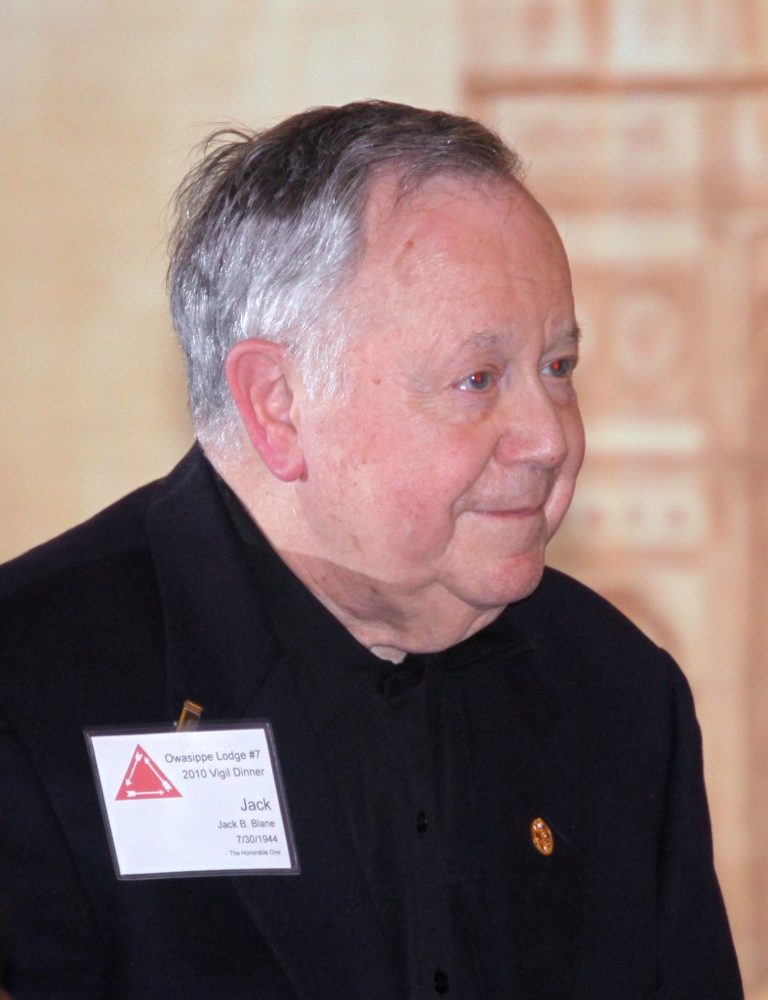

Jack B. Blane – GHQ Staff – Owasippe Scout Camp – Summer 1938
Jack B. Blane was born on May 20, 1923 on the Southside of Chicago. He attended the Isabelle C. O'Keeffe Elementary School at 6940 S. Merrill Avenue. Jack joined Boy Scout Troop 557 in 1935 at age 12. The troop was sponsored by the Bryn Mawr Community Church at 7000 S. Jeffery Blvd. and led by Scoutmaster Mr. K.R. Burkhardt. During his time as a Scout he rose through the ranks of leadership, holding Troop positions as Assistant Patrol Leader, Patrol Leader, and Senior Patrol Leader. Given his outstanding leadership, Jack reached the rank of Life Scout in May 1937 as reported by the Southeast Economist Newspaper. The Courts of Honor for the South Shore District were held at the Shoreland Community Center. He achieved the rank of Eagle Scout the following year in 1938 and received three Eagle Palms.
Jack attended Camp James E. West at Owasippe, taking the train from Chicago to get there. He was "surprised, honored, and humbled" when he was selected at Camp West for induction into Ordeal membership in the Order of the Arrow on August 06, 1936. He sealed his membership in the Order the following year by taking the obligations of the Brotherhood Honor on August 01, 1937. That year, 1937, a polio epidemic broke out throughout the United States. Jack remembers that many of the Scouts at Owasippe were sent home immediately, only to be quarantined to their homes for the reminder of the summer when they reached Chicago. It was his first brush with effects of polio on society, and inspired him on a course of action with the Rotary later in life, that would affect the lives of millions of people.
After spending several years at camp as a Scout, he went on to work on the General Headquarters Staff with George Mozealous and Bob Pagel from 1939-1942. This taught him firsthand the challenges of camp administration. Skills like these were certainly utilized during his time as a business executive. On a higher level, Jack notes that his experience on camp staff gave him an appreciation for working with diverse populations and how everyone is on an equal basis in all walks of life. It also stressed to him the importance of being dependable in one's responsibilities and fair to all concerned.
For his outstanding service as a Scout and member of the Owasippe Staff, Jack received his Vigil Honor on July 30, 1944. He was given the Indian name Wulapeju, translated as "Just and Upright One". The experience was, and remains to this day, a high honor given that the Order of the Arrow is unique in its recognition of those who put service and self-sacrifice as the top priorities in life.
Jack graduated from Hyde Park High School in 1941, serving as the Class of '41 Chairman of the Graduation ceremonies. After high school, Jack attended the University of Michigan in Ann Arbor graduating with both Bachelor's and Master's Degrees in Engineering, specializing in industrial management. He enlisted in the Marines on November 21, 1942 while a college student and went on to serve eight years as a commissioned officer in the United States Marine Corps Reserves (1942-1950).
After College, Jack married his high school sweetheart Joan in 1946. They had three children and lived in Highland Park, IL. After 61 wonderful years of marriage, Joan passed away on June 14, 2007.
Jack went to work for the Ekco Products Company (a housewares manufacturing firm) in Chicago, IL as a trainee in 1948. He found the job through word of mouth and then rose through the ranks in the company, eventually becoming its President! This is not surprising given his ingenuity and skill; Jack holds a U.S. patent for bakery ware he created while at Ekco Company. He retired after 37 years of service in 1985.
During his time in Scouting, Jack served as a Scoutmaster in the Southeast Ohio Council – Cambridge, OH. He was the Council Vice-President of the Northwest Suburban Illinois Council in Wheeling, IL, served as the Chairman of the Council Exploring Committee, and currently serves on the Council's Advisory Board.
After his retirement from Ekco Products in 1985, Jack focused his efforts on a life of public service; his commitment to the community is exemplary. He served as the President and Director of the Highland Park Public Library for six years (1984-1990), as a City Councilman (1991-1999) for eight years, as the City Treasurer for two years (2001-2003), and during that same time period founded the Highland Park Community Foundation in 1992, serving as its Chairman from 2005-2010. After stepping down from the top job in 2010, he continues his work as a Board member of the Foundation. Jack has also been very involved with the Rotary International for over 50 years as a member from Wheeling, IL. He was a Past Governor of Northern Illinois Rotary District 6440 in 1978-1979.
In 1985 Jack was the primary force behind Rotary's Polio Plus Campaign that is an international effort to eradicate polio from the world. In 2000 he established the Blane Community Immunization Grants – a nationwide program in all 50 states that helps to coordinate the efforts of local groups that provide immunizations. Through his efforts, and those of other like-minded Rotarians, the number of countries with polio has dropped from 125 to only 3. Eradication of this scourge from the face of the Earth is clearly in sight.
When reflecting back on his life in Scouting as a Vigil Member of the Order of the Arrow, Jack notes, "This year I am celebrating my 50th year in Rotary International. I maintain that the principles of both organizations are quite similar. Because of my Scouting experience, it became very comfortable for me to work with Rotarians throughout the world and, as a result, do 'good in the world.'"
Ever true to his mission of service, Jack died at age 94 on February 19, 2018. His memory is an inspiration to all who strive to live a life in the service of others.
